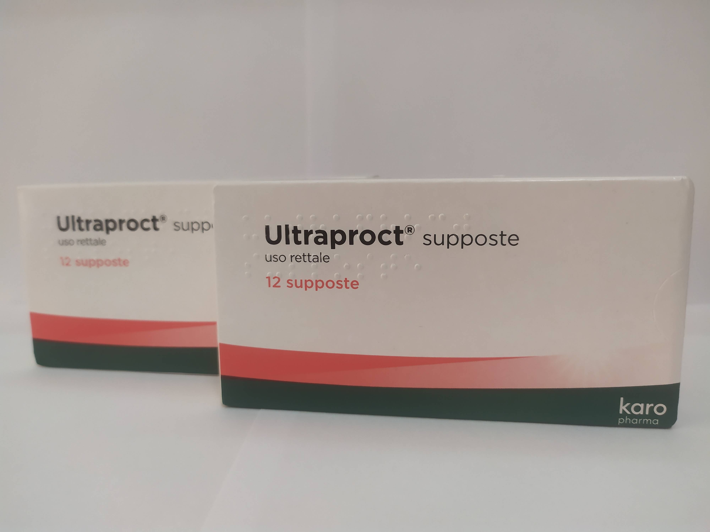

Контактная информация:
Цена: 450 грн/уп.
В наличии
Производитель: Италия
Цена: 450 грн/уп.
В наличии
Именно в FarmItal можно купить Ультрапрокт свечи, Ultraproct supposte в Украине. Гарантировано качественное лекарство из Италии!
Доставка Ultraproct supposte осуществляется транспортными компаниями, сроки выполнения заказа оговариваются менеджером Фармитал. Вы можете заказать Ультрапрокт свечи в городах: Одесса, Херсон, Чернигов, Северодонецк, Бердянск, Бровары, Днепр, Винница, Киев, Славянск, Полтава, Краматорск, Белая Церковь, Каменское, Мариуполь, Черновцы, Александрия, Камь янец-подольский, Львов, Запорожье, Кропивницкий, Житомир, Ивано-Франковск, Сумы, Черкассы, Константиновка, Мелитополь, Кривой Рог, Ровно, Луцк, Никополь, Павлоград, Ужгород, Кременчуг, Лисичанск, Хмельницкий, Тернополь, Харьков, Николаев, а также в других населённых пунктах Украины.
мазь белая или желтоватая полупрозрачная в утубах, суппозитории желтовато-белые;
1 суппозиторий содержит флуокортолонупивалата 0,61 мг, флуокортолона капроата 0,63 мг и цинхокаина гидрохлорида 1 мг; другие составляющие: жир твердый.
Мазь ректальная, суппозитории ректальные.
Гемороидальные узлы, поверхностные трещины заднего прохода, проктит.
Перед применением Ультрапрокта® (рекомендуемое сразу же после дефекации) участок заднепроходного отверстия следует тщательно очистить. Наблюдающееся улучшение обычно достаточно быстро, не должно стать поводом для преждевременного прекращения курса лечения. Для предотвращения рецидивов, даже после полного исчезновения жалоб Ультрапрокт следует применять еще по крайней мере в течение 1 недели, хотя с большими интервалами (мазь 1 раз в сутки или по 1 суппозиторию каждые 2-е сутки). Рекомендуется, однако, по возможности не превышать 4-недельный курс лечения.
● Суппозитории:
Обычно ежедневно вводят по 1 суппозиторию глубоко в заднепроходное отверстие. При сильных болях в первый день 2 – 3 раза водят по 1 суппозиторию.
Размягченные под воздействием тепла суппозитории перед открыванием оболочки кладут в холодную воду.
В случае длительного применения Ультрапрокта® (более 4 недель) нельзя исключить местные сопутствующие явления, как например, атрофия кожи.
В редких случаях возможны аллергические кожные реакции.
Туберкулезные или сифилитические процессы на участке нанесения препарата, вирусные заболевания (например, реакция после прививки, ветряная оспа).
Супозитории: хранить в недоступном для детей месте при температуре не выше 25°С.
Срок годности суппозиториев – 2 года.